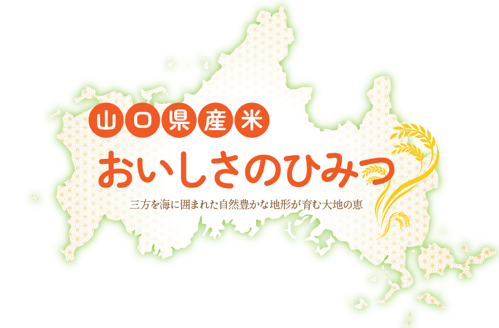
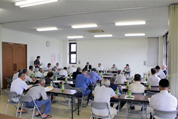
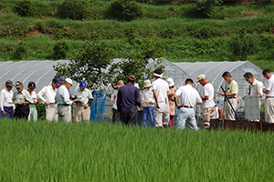
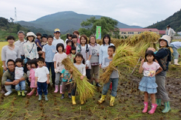
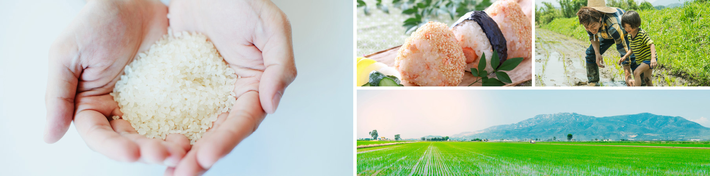
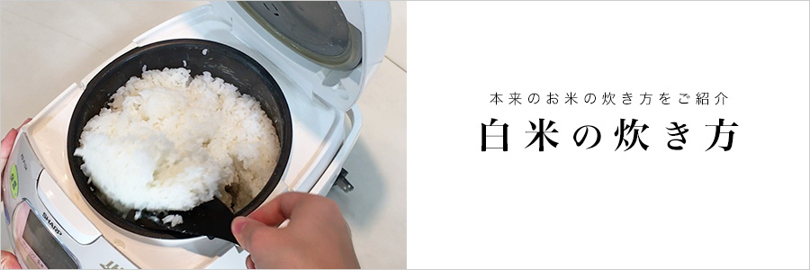
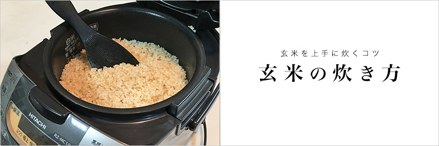

おいしさのひみつ

山口県産米（みずほ米？）の
おいしさの秘密
おいしさの秘密①：
自然が育む、米づくりに適した環境
山口県は本州の最西端に位置し、北部と西部は日本海、南部は瀬戸内海と、三方を海に囲まれています。県中央には東西に中国山地が走り、地理的・地形的特徴により、まさに「日本の縮図」ともいえる多様な気候条件を備えています。
このような恵まれた自然環境の中で、私たちは「適地・適作」を基本に、それぞれの地域に合った品種を選び、米づくりを行っています。
おいしさの秘密②：品種の特徴
山口県では地域の気候や土壌に適した多様な品種が栽培されています。それぞれの品種に個性があり、炊きあがりの香りや粘り、口あたりの違いを楽しめます。
- コシヒカリ
- 全国的に人気の高い定番品種で、山口県でも最も作付け面積の多い品種です。強い粘りと甘みが特徴で、冷めてもおいしく、おにぎりやお弁当にも最適です。
- 晴るる（はるる）
- 山口県が開発したオリジナル品種で、大粒で食べ応えがあり、炊きあがりはふっくら。白いごはんとしての満足感が高いお米です。粘りと柔らかさのバランスも良く、家庭の食卓にもぴったり。
- きぬむすめ
- 炊きあがりが白くつややかで、ややしっかりとした粒立ちが特徴。さっぱりとした味わいで、和食との相性が抜群です。
- ひとめぼれ
- コシヒカリやヒノヒカリと比べるとやや柔らかめで、粘りと柔らかさのバランスが良く、万人に好まれる優しい味わいです。
- ヒノヒカリ
- しっかりとした粒感と、甘みのある味わいが特徴。炊きあがりのツヤも良く、普段使いのお米として人気です。
- 恋の予感
- 香りが良く、口当たりもなめらかな味わいが特徴です。ユニークな名前とあいまって、贈り物にもおすすめの品種です。
- にこまる
- 丸みのある粒で、しっとりもちもちとした食感が特徴。冷めても硬くなりにくく、お弁当にもぴったりです。
おいしさの秘密③：JA山口県との取り組み
山口県産のお米をさらに良いものにするため、JA山口県と密接に連携し、契約するお米を「みずほ米」と称して、より良い品質のお米の生産に取り組んでいます。
毎年、各エリアにあるJA山口県の統括本部にて、産地の状況や作付け動向などを確認し、収穫後には生産者を含めた反省会なども実施。みずほ米の生産・流通や消費拡大について協議し、生産者の想いと消費者のニーズを合致させるべく、日々熱い議論を交わしています。



みずほ米だからおいしい
ごはんが大好きな皆様へ地元山口自慢のお米を届けたいという思いから、
みずほ屋は「みずほ米」という独自ブランドでの販売展開に辿り着きました。
山口米を通じて産地と消費者を「安心・安全・厳選」でつなぎ、お客様のニーズにしっかりと応えます。

「みずほ米」とは
県内産地(JA)との契約栽培米
みずほ屋では「他にはない特長のある米」「産地の顔が見える安全安心の米」をお客様に安定して供給するため、県内産地(JA) との契約栽培米「みずほ米」の取り組みを行っています。自社精米工場で搗精した自慢の「みずほ米」は、ネット通販・スーパー・小売店・飲食店などを通じて、皆様の食の安全を陰ながら支えさせて頂いております。
おいしいお米をもっとおいしく
お米は炊き方によって、もっともっと美味しくなります。
本来のお米の炊き方をみなさんに知ってもらって、おいしいお米をもっともっと美味しくいただきましょう。

